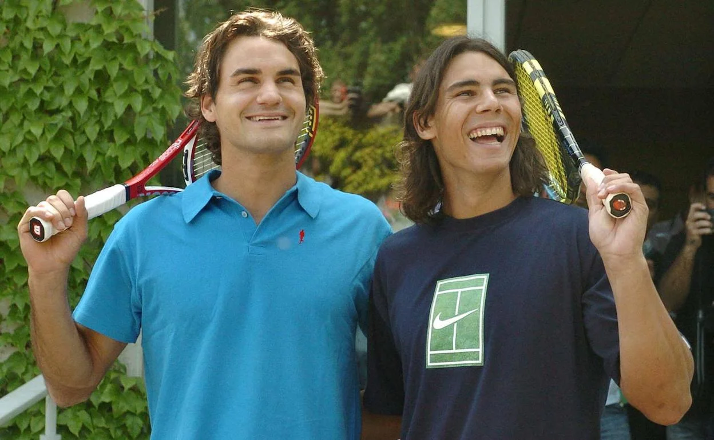

Estudios
Estudios formales, cursos y complementos.
Estudios formales
Cursos
Complementos
Uno de los campos más atrapantes es la filosofía. El arte de preguntar, de saber y entender. Explora los cimientos de nuestros conocimientos exponiendo la fortaleza de nuestros argumentos como también las motivaciones y las causas últimas.
Lejos de verla como una disciplina abstracta o distante, entiendo la filosofía como una herramienta práctica y cotidiana. Me apasiona porque es el arte de hacer las preguntas correctas antes de apresurarse a dar respuestas automáticas.
En mi día a día, la filosofía me aporta perspectiva, autorreflexión y templanza. Me ayuda a navegar la incertidumbre, a cuestionar mis propios sesgos y a entender que detrás de cada sistema, interacción o conflicto siempre hay una dimensión humana.
En el ámbito profesional y tecnológico, este enfoque se vuelve un diferencial directo:
- Lógica y estructura: Descomponer un dilema filosófico exige el mismo rigor que diseñar la arquitectura de una base de datos o depurar un flujo complejo de software.
- Criterio funcional: Antes de escribir código o automatizar un proceso, me pregunto el para qué. La filosofía enseña a no confundir el instrumento con el propósito, asegurando que la tecnología resuelva necesidades reales.
- Ética e Inteligencia Artificial: En plena era de la IA y el análisis masivo de datos, reflexionar sobre el impacto, la transparencia y los límites de lo que construimos ya no es un debate accesorio, sino una responsabilidad profesional básica.
Para mí, filosofar no es aislarse a teorizar, sino cultivar la claridad mental necesaria para tomar mejores decisiones, trabajar con empatía y construir soluciones que aporten verdadero valor.
Deporte que juego desde el año 2005, es mi descarga a tierra donde no solamente se entrena el cuerpo sino la mentalidad.
Aprendí viendo videos por youtube, y desde ese momento hasta hoy no los he dejado más que por circunstancias de peso como el estudio.
